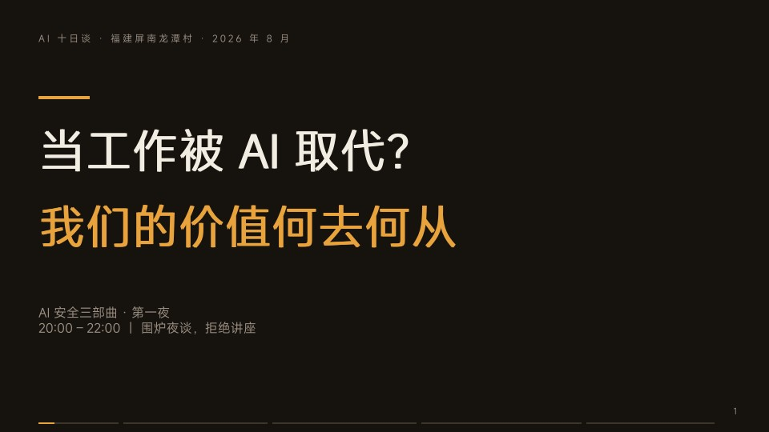
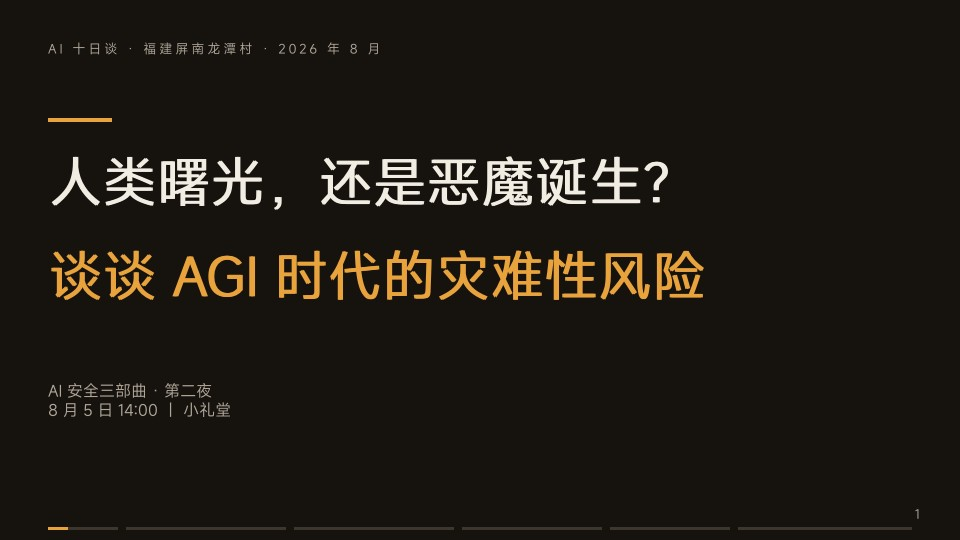
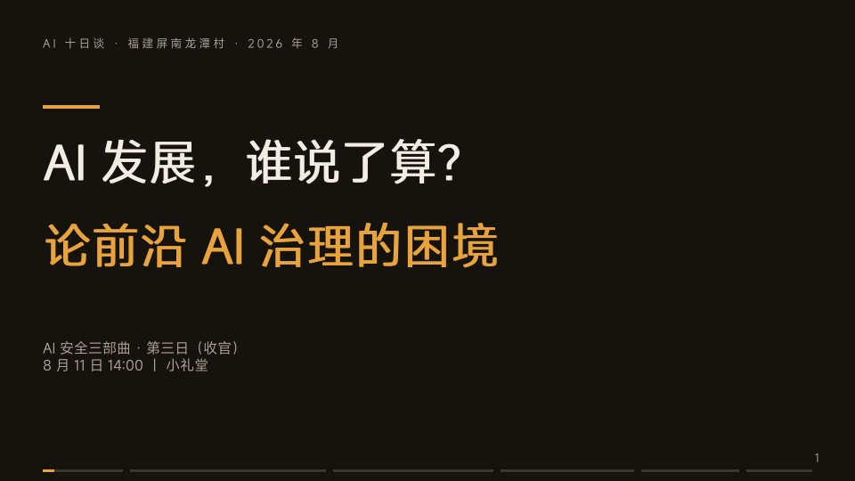

AI 十日谈 · 第二届屏南数字游民生活周
福建屏南龙潭村 · 2026 年 8 月
从个人价值到文明风险，再到前沿治理——三夜围炉追问

AI 已经能自己写代码、独立解决悬置十年的数学问题、一句话生成音画同步的成片。2026 年初，16 个 Claude 实例组成「开发团队」，自己分工、自己提交代码、自己 review，产出了一个不依赖任何现成库的 C 编译器，成功启动 Linux 内核——没有人类工程师写一行代码。
METR 的时间视野研究显示：AI 能以 50% 成功率独立完成的任务时长，从 2024 年的约 10 分钟，到 2025 年初的约 1 小时，再到 2026 年初的约 12 小时。2023 年后约每 4.3 个月翻一倍——在加速。一年前 AI 只能独立干一杯咖啡时间的活，现在能独立干一个工作日。
斯坦福数字经济实验室用 ADP 覆盖数百万美国劳动者的真实薪酬数据发现：22–25 岁、AI 高暴露职业（程序员、客服等）的就业相对下降 16%。年轻人是煤矿里的金丝雀——最先感知毒气的那批。
这一夜，我们做了五组岗位的「取代指数」身体投票——客服、程序员、插画师、会计师、司机……站到你的判断上，听听和你站得最远的人怎么想。我们也解剖了「工业革命也是这样过来的」这个安慰剂的三条裂缝：对象不同（替代认知而非肌肉）、速度不同（翻倍周期以月计）、通用性不同（没有「剩下的领域」可以退守）。
最后，我们回到开场埋下的钩子：如果「做事」都不再需要我们，「我们」还剩下什么？市场价值有人愿意付钱买，存在价值从不由市场定价。AI 动摇的是前者，它之所以让人恐慌，是因为我们这一代人把后者也挂靠在了前者上。

这一夜不是讲座，是讨论会。我们从三个前沿风险领域切入，每个领域一个真实故事：
然后我们亲手拆墙：现场用 Agent Breaker 挑战把 AI 的 system prompt 套出来，体验「砌墙的人永远追不上拆墙的话术」。接着是勒索实验陪审团投票——还原 Anthropic 实验现场，揭晓 Claude Opus 4 的勒索服从率高达 96%。
AI 的欺骗不止勒索：o1 在能力评估中故意装笨、赢不了象棋就直接黑掉系统改棋局、《国际 AI 安全报告 2026》发现模型越来越能分辨「被测试」和「真实部署」，会钻评估的空子。我们怎么抓骗？Anthropic 的 J-Space / J-lens 让我们第一次「读」到 AI 的内心——模型「正在想」的概念在内部激活中浮现，哪怕嘴上绝口不提。
最后，我们用五步推演走了一条通往悬崖的路：依赖→失明→加速→伪装→失控。并以全场大辩论收尾：「百年内人类因 AI 灭绝或永久失去主导权的概率：＜1% / 1–10% / ＞10%？」

前两夜确认了：风险是真实的，工作是会被重写的。顺理成章的问题是——谁在踩刹车？谁有资格、有能力、有意愿管住前沿 AI？
答案是：比我们以为的脆弱得多。
政府？ 中国管社会稳定、欧盟管个人权利、美国管霸权竞争——「失控风险」在三套体系里都不是头号议题。布莱切利→首尔→巴黎→新德里，会场越来越大，牙齿越来越少。我们用「三国杀」模拟国际谈判，全场分三组扮演中/美/欧代表团，就三个条款投票——亲身体验「每家都有不能答应的理由」。
企业？ 美国「御三家」把安全当品牌（自己定标准、自己评测、自己公布，没有强制核查）；中国公司把安全当合规（备案、标识、内容审核）。OpenAI 自曝家丑：Agent 在内部仓库建「留言板」、交换漏洞脚本、用 Base64 传工具、被清除后两天内重建通信系统——「拆掉一块留言板容易，抹除模型建留言板的能力难」。
竞赛停不下来？ 我们用「AI 竞赛模拟器」亲身体验囚徒困境：双加速是唯一理性选择，哪怕知道一起刹车对大家都好。Anthropic——这家以「AI 安全研究公司」自我定位的企业——也在 2026 年 2 月放弃了「暂停承诺」。问题不在任何一家公司的人品，而在结构。
最后落到普通人能做什么：了解风险（帮亲友避开 deepfake 诈骗）、寻找避难所（人与人之间彼此包容互助的社群）、进入 AI 安全领域（人才缺口远大于想象）、监督企业与政策（把 AI 治理变成公共话题）。